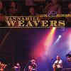

Celtic Lyrics Corner > Artists & Groups > Tannahill Weavers > Live & In Session > When The Kye Come Hame
|  | When The Kye Come Hame |
| Credits : | Traditional |
|
a) When The Kye Come Hame
b) Munlochy Bridge |
|
| Appears On : | Epona ; Live & In Session |
| Language : | Scots-English |
Lyrics :
Come, all ye jolly shepherd lads that whistle thro' the glen
I'll tell ye all a secret that the courtiers dinnae ken
What is the greatest bliss that the tongue o' man can name
Tae woo a bonnie lassie when the kye come hame
Chorus (after each verse)
:
When the kye come hame
When the kye come hame
'Tween the gloamin' and the mirk
When the kye come hame
It's no' beneath the burgenet, nor yet beneath the crown
It's no' on bed of velvet, nor yet on bed of down
It's beneath the spreading birch in the dell without a name
Wi' a bonnie, bonnie lassie when the kye come hame
See yonder pawky shepherd lad that lingers on the hill
His sheep are in the fauld, and his lambs are lying still
But he daurnae gang tae bed for his heart is in a flame
Tae see his bonnie lassie when the kye come hame
Awa' wi' fame and fortune, what comfort can it gie?
And a' the airts that prey upon man's life and liberty
Gie me the highest joy that the heart o' man can frame
My bonnie, bonnie lassie when the kye come hame
(Chorus 2x)